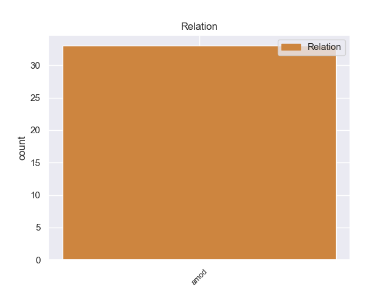
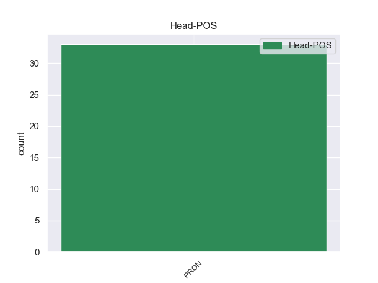
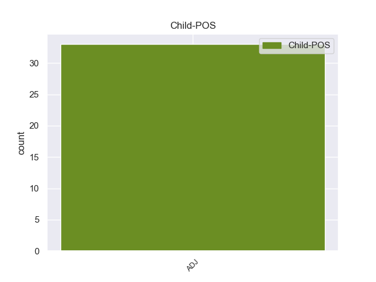

Distribution of features within this leaf



Agreement Rules sorted by frequency.
- When the dependent token is the adjectival modifier(amod) of the head token, and the head token is PRON and the dependent token is ADJ.
1 Παρ' _ _ _ _ 0 _ _ _
2 όλα όλος ADJ ADJ Case=Acc|Gender=Neut|Number=Plur 3 amod _ _
3 αυτά αυτός PRON PRON Case=Acc|Gender=Neut|Number=Plur|Person=3|PronType=Dem 0 _ _ _
4 , _ _ _ _ 0 _ _ _
5 χαιρετίζω _ _ _ _ 0 _ _ _
6 τη _ _ _ _ 0 _ _ _
7 μεταστροφή _ _ _ _ 0 _ _ _
8 του _ _ _ _ 0 _ _ _
9 προέδρου _ _ _ _ 0 _ _ _
10 Μουσάραφ _ _ _ _ 0 _ _ _
11 και _ _ _ _ 0 _ _ _
12 την _ _ _ _ 0 _ _ _
13 υποστήριξή _ _ _ _ 0 _ _ _
14 του _ _ _ _ 0 _ _ _
15 προς _ _ _ _ 0 _ _ _
16 τις _ _ _ _ 0 _ _ _
17 Ηνωμένες _ _ _ _ 0 _ _ _
18 Πολιτείες _ _ _ _ 0 _ _ _
19 σ _ _ _ _ 0 _ _ _
20 τον _ _ _ _ 0 _ _ _
21 πόλεμο _ _ _ _ 0 _ _ _
22 που _ _ _ _ 0 _ _ _
23 έχουν _ _ _ _ 0 _ _ _
24 εξαπολύσει _ _ _ _ 0 _ _ _
25 εναντίον _ _ _ _ 0 _ _ _
26 της _ _ _ _ 0 _ _ _
27 τρομοκρατίας _ _ _ _ 0 _ _ _
28 , _ _ _ _ 0 _ _ _
29 ο _ _ _ _ 0 _ _ _
30 οποίος _ _ _ _ 0 _ _ _
31 οδήγησε _ _ _ _ 0 _ _ _
32 σ _ _ _ _ 0 _ _ _
33 την _ _ _ _ 0 _ _ _
34 ανατροπή _ _ _ _ 0 _ _ _
35 του _ _ _ _ 0 _ _ _
36 καθεστώτος _ _ _ _ 0 _ _ _
37 των _ _ _ _ 0 _ _ _
38 Ταλιμπάν _ _ _ _ 0 _ _ _
39 και _ _ _ _ 0 _ _ _
40 σ _ _ _ _ 0 _ _ _
41 την _ _ _ _ 0 _ _ _
42 εξάρθρωση _ _ _ _ 0 _ _ _
43 του _ _ _ _ 0 _ _ _
44 δικτύου _ _ _ _ 0 _ _ _
45 της _ _ _ _ 0 _ _ _
46 Αλ _ _ _ _ 0 _ _ _
47 Κάιντα _ _ _ _ 0 _ _ _
48 σ _ _ _ _ 0 _ _ _
49 το _ _ _ _ 0 _ _ _
50 Αφγανιστάν _ _ _ _ 0 _ _ _
51 , _ _ _ _ 0 _ _ _
52 αν _ _ _ _ 0 _ _ _
53 και _ _ _ _ 0 _ _ _
54 το _ _ _ _ 0 _ _ _
55 ενλόγω _ _ _ _ 0 _ _ _
56 καθεστώς _ _ _ _ 0 _ _ _
57 ήταν _ _ _ _ 0 _ _ _
58 σε _ _ _ _ 0 _ _ _
59 μεγάλο _ _ _ _ 0 _ _ _
60 βαθμό _ _ _ _ 0 _ _ _
61 δημιούργημα _ _ _ _ 0 _ _ _
62 των _ _ _ _ 0 _ _ _
63 μυστικών _ _ _ _ 0 _ _ _
64 υπηρεσιών _ _ _ _ 0 _ _ _
65 του _ _ _ _ 0 _ _ _
66 Πακιστάν _ _ _ _ 0 _ _ _
67 . _ _ _ _ 0 _ _ _
Disagree Examples:
1 Αντιμετωπίζοντας _ _ _ _ 0 _ _ _
2 αυτή _ _ _ _ 0 _ _ _
3 τη _ _ _ _ 0 _ _ _
4 διπλή _ _ _ _ 0 _ _ _
5 πρόκληση _ _ _ _ 0 _ _ _
6 σ _ _ _ _ 0 _ _ _
7 την _ _ _ _ 0 _ _ _
8 εσωτερική _ _ _ _ 0 _ _ _
9 και _ _ _ _ 0 _ _ _
10 εξωτερική _ _ _ _ 0 _ _ _
11 πολιτική _ _ _ _ 0 _ _ _
12 , _ _ _ _ 0 _ _ _
13 μεταξύ _ _ _ _ 0 _ _ _
14 της _ _ _ _ 0 _ _ _
15 απορρόφησής _ _ _ _ 0 _ _ _
16 της _ _ _ _ 0 _ _ _
17 από _ _ _ _ 0 _ _ _
18 τη _ _ _ _ 0 _ _ _
19 Ρουμανία _ _ _ _ 0 _ _ _
20 ή _ _ _ _ 0 _ _ _
21 τη _ _ _ _ 0 _ _ _
22 Ρωσία _ _ _ _ 0 _ _ _
23 , _ _ _ _ 0 _ _ _
24 επέλεξαν _ _ _ _ 0 _ _ _
25 η _ _ _ _ 0 _ _ _
26 πολιτική _ _ _ _ 0 _ _ _
27 ελίτ _ _ _ _ 0 _ _ _
28 και _ _ _ _ 0 _ _ _
29 οι _ _ _ _ 0 _ _ _
30 ψηφοφόροι ψηφοφόρος ADJ ADJ Case=Nom|Gender=Fem|Number=Plur 31 amod _ _
31 αυτής αυτός PRON PRON Case=Gen|Gender=Fem|Number=Sing|Person=3|PronType=Dem 0 _ _ _
32 της _ _ _ _ 0 _ _ _
33 μικρής _ _ _ _ 0 _ _ _
34 πρώην _ _ _ _ 0 _ _ _
35 Σοβιετικής _ _ _ _ 0 _ _ _
36 Δημοκρατίας _ _ _ _ 0 _ _ _
37 , _ _ _ _ 0 _ _ _
38 το _ _ _ _ 0 _ _ _
39 1994 _ _ _ _ 0 _ _ _
40 , _ _ _ _ 0 _ _ _
41 αναμφισβήτητα _ _ _ _ 0 _ _ _
42 την _ _ _ _ 0 _ _ _
43 ανεξαρτησία _ _ _ _ 0 _ _ _
44 τους _ _ _ _ 0 _ _ _
45 . _ _ _ _ 0 _ _ _
1 Ως _ _ _ _ 0 _ _ _
2 εκ _ _ _ _ 0 _ _ _
3 τούτου _ _ _ _ 0 _ _ _
4 είναι _ _ _ _ 0 _ _ _
5 , _ _ _ _ 0 _ _ _
6 σύμφωνα _ _ _ _ 0 _ _ _
7 με _ _ _ _ 0 _ _ _
8 τη _ _ _ _ 0 _ _ _
9 λογική λογική ADJ ADJ Case=Acc|Gender=Fem|Number=Sing 10 amod _ _
10 αυτού αυτός PRON PRON Case=Gen|Gender=Neut|Number=Sing|Person=3|PronType=Dem 0 _ _ _
11 του _ _ _ _ 0 _ _ _
12 αρχιφασίστα _ _ _ _ 0 _ _ _
13 , _ _ _ _ 0 _ _ _
14 υπεύθυνη _ _ _ _ 0 _ _ _
15 για _ _ _ _ 0 _ _ _
16 την _ _ _ _ 0 _ _ _
17 παιδική _ _ _ _ 0 _ _ _
18 πορνογραφία _ _ _ _ 0 _ _ _
19 . _ _ _ _ 0 _ _ _
1 Καθώς _ _ _ _ 0 _ _ _
2 ο _ _ _ _ 0 _ _ _
3 αξιότιμος _ _ _ _ 0 _ _ _
4 βουλευτής _ _ _ _ 0 _ _ _
5 διαθέτει _ _ _ _ 0 _ _ _
6 πολύ _ _ _ _ 0 _ _ _
7 μεγαλύτερη _ _ _ _ 0 _ _ _
8 πείρα _ _ _ _ 0 _ _ _
9 από _ _ _ _ 0 _ _ _
10 τη _ _ _ _ 0 _ _ _
11 δική δικός ADJ ADJ Case=Acc|Gender=Fem|Number=Sing 12 amod _ _
12 μου μου PRON PRON Case=Gen|Gender=Masc|Number=Sing|Person=1|Poss=Yes|PronType=Prs 0 _ _ _
13 , _ _ _ _ 0 _ _ _
14 γνωρίζει _ _ _ _ 0 _ _ _
15 πως _ _ _ _ 0 _ _ _
16 προσπαθούμε _ _ _ _ 0 _ _ _
17 δυναμικά _ _ _ _ 0 _ _ _
18 να _ _ _ _ 0 _ _ _
19 αναπτύξουμε _ _ _ _ 0 _ _ _
20 μια _ _ _ _ 0 _ _ _
21 θεωρητικά _ _ _ _ 0 _ _ _
22 ορθή _ _ _ _ 0 _ _ _
23 επιχειρηματολογία _ _ _ _ 0 _ _ _
24 για _ _ _ _ 0 _ _ _
25 τη _ _ _ _ 0 _ _ _
26 διπλωματία _ _ _ _ 0 _ _ _
27 πρόληψης _ _ _ _ 0 _ _ _
28 , _ _ _ _ 0 _ _ _
29 προσπαθώντας _ _ _ _ 0 _ _ _
30 να _ _ _ _ 0 _ _ _
31 συνδυάσουμε _ _ _ _ 0 _ _ _
32 το _ _ _ _ 0 _ _ _
33 σύνολο _ _ _ _ 0 _ _ _
34 των _ _ _ _ 0 _ _ _
35 διαφόρων _ _ _ _ 0 _ _ _
36 μη _ _ _ _ 0 _ _ _
37 στρατιωτικών _ _ _ _ 0 _ _ _
38 βασικών _ _ _ _ 0 _ _ _
39 στόχων _ _ _ _ 0 _ _ _
40 που _ _ _ _ 0 _ _ _
41 νομίζουμε _ _ _ _ 0 _ _ _
42 πως _ _ _ _ 0 _ _ _
43 απαιτούνται _ _ _ _ 0 _ _ _
44 . _ _ _ _ 0 _ _ _
1 Κύριε _ _ _ _ 0 _ _ _
2 Προεδρεύων _ _ _ _ 0 _ _ _
3 του _ _ _ _ 0 _ _ _
4 Συμβουλίου _ _ _ _ 0 _ _ _
5 , _ _ _ _ 0 _ _ _
6 ειλικρινά ειλικρινώ ADJ ADJ Case=Nom|Gender=Neut|Number=Plur 7 amod _ _
7 σας εγώ PRON PRON Case=Gen|Gender=Masc|Number=Plur|Person=2|PronType=Prs 0 _ _ _
8 ευχαριστώ _ _ _ _ 0 _ _ _
9 για _ _ _ _ 0 _ _ _
10 την _ _ _ _ 0 _ _ _
11 ολοκληρωμένη _ _ _ _ 0 _ _ _
12 απάντηση _ _ _ _ 0 _ _ _
13 που _ _ _ _ 0 _ _ _
14 δώσατε _ _ _ _ 0 _ _ _
15 σε _ _ _ _ 0 _ _ _
16 αυτή _ _ _ _ 0 _ _ _
17 την _ _ _ _ 0 _ _ _
18 ερώτηση _ _ _ _ 0 _ _ _
19 αναφερόμενος _ _ _ _ 0 _ _ _
20 σ _ _ _ _ 0 _ _ _
21 τα _ _ _ _ 0 _ _ _
22 προγράμματα _ _ _ _ 0 _ _ _
23 που _ _ _ _ 0 _ _ _
24 , _ _ _ _ 0 _ _ _
25 όπως _ _ _ _ 0 _ _ _
26 μας _ _ _ _ 0 _ _ _
27 θυμίσατε _ _ _ _ 0 _ _ _
28 , _ _ _ _ 0 _ _ _
29 έχουν _ _ _ _ 0 _ _ _
30 υλοποιηθεί _ _ _ _ 0 _ _ _
31 . _ _ _ _ 0 _ _ _
1 Η _ _ _ _ 0 _ _ _
2 κριτική _ _ _ _ 0 _ _ _
3 συνεπώς _ _ _ _ 0 _ _ _
4 που _ _ _ _ 0 _ _ _
5 ασκήθηκε _ _ _ _ 0 _ _ _
6 από _ _ _ _ 0 _ _ _
7 τον _ _ _ _ 0 _ _ _
8 εισηγητή εισηγητή ADJ ADJ Case=Acc|Gender=Masc|Number=Sing 9 amod _ _
9 μας μου PRON PRON Case=Gen|Gender=Masc|Number=Plur|Person=1|Poss=Yes|PronType=Prs 0 _ _ _
10 σε _ _ _ _ 0 _ _ _
11 αυτό _ _ _ _ 0 _ _ _
12 το _ _ _ _ 0 _ _ _
13 σημείο _ _ _ _ 0 _ _ _
14 εισακούστηκε _ _ _ _ 0 _ _ _
15 . _ _ _ _ 0 _ _ _